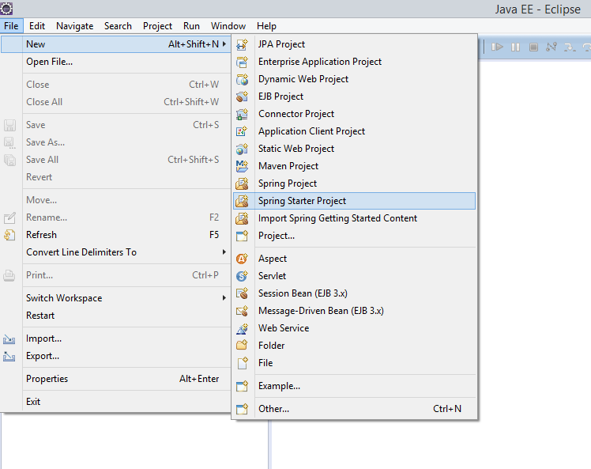
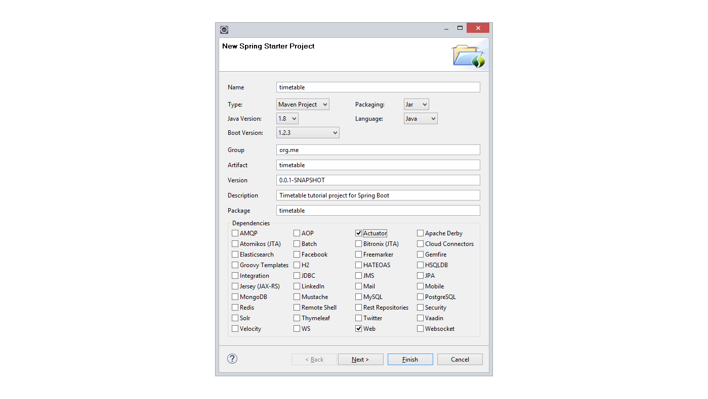
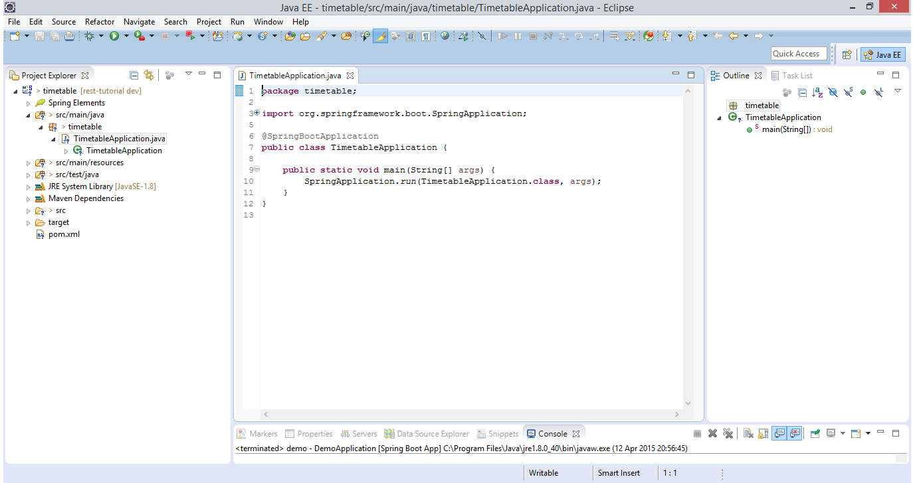
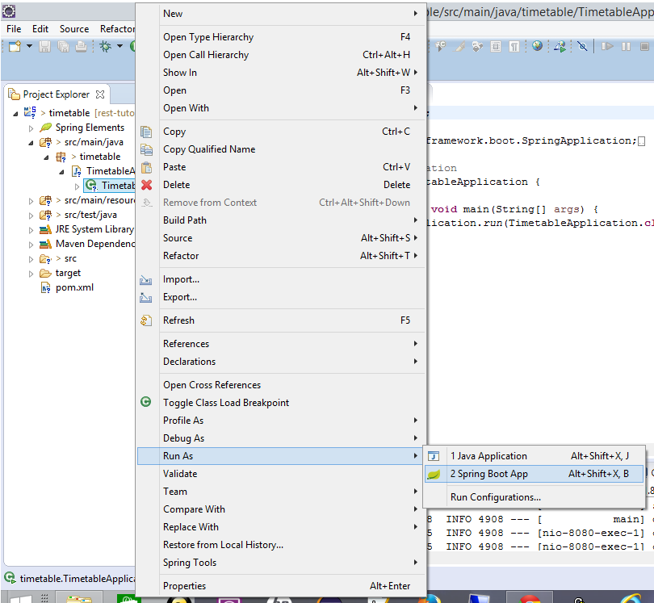

We're going to build a small sample application using Spring Boot. The application is for a leisure centre that wants to be able to show everyone the classes it offers, let its staff edit those classes and let customers book a place on a class
In Eclipse, start a new spring starter project:
Set up details of the project like this - we're using Java 1.8, and Maven to build We're just going to select actuator and web for now, we can add more capabilities later on
We can just click on 'Finish' now, and we will get a zip file downloaded with our new project in. It should look something like this:
Believe it or not we can already run this up and it will do things...Launch it in Eclipse
Now in a browser navigate to http://localhost:8080/health
Hopefully you'll see something like this:

Spring boot actuator has set up a number of URL endpoints automatically. 'health' is one of them. You can see the others when in the console within the IDE (I've shortened the output lines a bit!):
... o.s.b.a.e.mvc.EndpointHandlerMapping : Mapped "{[/beans],methods=[GET],params=[],headers=[],consumes=[],produces=[],custom=[]}" ...
... o.s.b.a.e.mvc.EndpointHandlerMapping : Mapped "{[/env/{name:.*}],methods=[GET],params=[],headers=[],consumes=[],produces=[],custom=[]}" ...
... o.s.b.a.e.mvc.EndpointHandlerMapping : Mapped "{[/env],methods=[GET],params=[],headers=[],consumes=[],produces=[],custom=[]}" ...
... o.s.b.a.e.mvc.EndpointHandlerMapping : Mapped "{[/health],methods=[],params=[],headers=[],consumes=[],produces=[],custom=[]}" ...
... o.s.b.a.e.mvc.EndpointHandlerMapping : Mapped "{[/metrics/{name:.*}],methods=[GET],params=[],headers=[],consumes=[],produces=[],custom=[]}" ...
... o.s.b.a.e.mvc.EndpointHandlerMapping : Mapped "{[/metrics],methods=[GET],params=[],headers=[],consumes=[],produces=[],custom=[]}" ...
... o.s.b.a.e.mvc.EndpointHandlerMapping : Mapped "{[/configprops],methods=[GET],params=[],headers=[],consumes=[],produces=[],custom=[]}" ...
... o.s.b.a.e.mvc.EndpointHandlerMapping : Mapped "{[/dump],methods=[GET],params=[],headers=[],consumes=[],produces=[],custom=[]}" ...
... o.s.b.a.e.mvc.EndpointHandlerMapping : Mapped "{[/info],methods=[GET],params=[],headers=[],consumes=[],produces=[],custom=[]}" ...
... o.s.b.a.e.mvc.EndpointHandlerMapping : Mapped "{[/autoconfig],methods=[GET],params=[],headers=[],consumes=[],produces=[],custom=[]}" ...
... o.s.b.a.e.mvc.EndpointHandlerMapping : Mapped "{[/mappings],methods=[GET],params=[],headers=[],consumes=[],produces=[],custom=[]}" ...
... o.s.b.a.e.mvc.EndpointHandlerMapping : Mapped "{[/shutdown],methods=[POST],params=[],headers=[],consumes=[],produces=[],custom=[]}" ...
... o.s.b.a.e.mvc.EndpointHandlerMapping : Mapped "{[/trace],methods=[GET],params=[],headers=[],consumes=[],produces=[],custom=[]}" ...
Try out some of the others
OK. So far so good, let's add some of our own code now.
For the REST service, we need two classes, the controller class that tells Spring what function will handle which URL/method and a data model class.
I'm going to put the data model classes into their own package just to help keep things tidy, so I added timetable.model. Within that package, I created a simple data model class 'Event':
package timetable.model;
public class Event {
private Long id;
private String title;
public Event(Long id, String title) {
this.id = id;
this.title = title;
}
public Long getId() {
return id;
}
public String getTitle() {
return title;
}
}
We don't need any annotations on this class, or anything else to tell Spring how to handle it
Now we need a controller class
First of all we'll just add an API to return all events, this will be a GET method call to /timetable and will return a list of Events
Here's what it looks like (this is in the timetable package)
The @Controller annotation tells Spring this is a Controller- it's mapping some endpoints.
The @RequestMapping above the class definition gives the root mapping- so all calls to (in our case) http://localhost:8080/timetable will look in here to be processed
The @RequestMapping above the getEvents() method tells Spring this is the method to use for a GET call, and the @ResponseBody annotation before the return type is very important- this tells Spring we want it to send back the body data as it is, we don't have a view defined (the same RequestMapping annotations get used for Spring MVC where Spring would expect to find a view class mapped). Miss it off and you'll get an exception when you try to make your API request
For now, the body of the method just creates a hard-wired List and returns it
Save it all and run it back up (Eclipse should autobuild it for you on saving)
In the console you should be able to see the new endpoint '/timetable' mapped:
Mapped "{[/timetable],methods=[GET],params=[],headers=[],consumes=[],produces=[],custom=[]}" onto public java.util.List timetable.TimetableController.getEvents()
Back in the browser http://localhost:8080/timetable should give you a string of JSON something like this:
[{"id":1,"title":"Yoga"},{"id":2,"title":"Boxercise"}]
Next we'll implement some methods for the Event resource, these will use the URL http://localhost:8080/timetable/event
But before we do that, we will refactor the Event object slightly, so that we use JPA persistence
We need to add some dependencies to the pom.xml file inside the <dependencies> tag:
<dependency>
<groupId>com.h2database</groupId>
<artifactId>h2</artifactId>
</dependency>
<dependency>
<groupId>org.springframework.boot</groupId>
<artifactId>spring-boot-starter-data-jpa</artifactId>
</dependency>
This gives us the spring data JPA libraries and the h2 in memory database. You could use another database such as MongoDB, MySQL
Now we'll change Event
We will need to add a default constructor so that JPA can create the object, and we can remove 'id' from the current constructor because the Id is now annotated as auto-generated (@GeneratedValue), so the constructors end up looking like this:
We also need to add a repository for our persisted Event, we can do this with minimal code just by adding a new interface in the timetable.model package:
We will need to access the EventRepository from the TimetableController, so in that class we add a new member:
@Autowired
EventRepository eventRepo;
We can initialise it with some default values in the TimetableApplication class with this method
Finally we can change the TimetableController getEvents() method to use the repository:
On to adding the remainder of the API
Now we can add a method to implement GET for an individual Event. The id of the event is used as part of the URL (this is the path variable).
If it can't find the event in the URL, it will throw an exception, this is annotated with HttpStatus.NOT_FOUND (404), which Spring will return for us if this exception is thrown
http://localhost:8080/timetable/event/1 should give us back the yoga class, http://localhost:8080/timetable/event/2 the boxercise class
Next, the POST method can add a new class to the repository. We generate the id automatically, and return the path to the generated event in the http header for the response. This path can be used as the URL for a subsequent request e.g. GET, DELETE
I'm using POST rather than PUT to implement the create, because I don't know the full URL for the new object (because the id is auto-generated). If the client were generating the id, then the PUT method might be more appropriate to use here
Finally, the DELETE method will remove an event
Now we have all these interfaces implemented, we can test them manually, using Chrome REST Console, or cURL, but it would be good to get some automated tests.
Spring Boot bundles some unit testing libraries automatically. When we created the project we automatically got a src/test/java folder, with a TimetableApplicationTests in it.
In the same folder, we can create a new class TimetableControllerTest to test our rest controller
We've told JUnit to user the SpringJUnit4ClassRunner to run the tests so it will be expecting to set up a Spring framework context
@SpringApplicationConfiguration tells the framework where to find its configuration
The @WebAppConfiguration and MockMvc mean we won't be using the full tomcat server for these tests
Before each test we make sure we have a clean set up with our mockMvc and also ensure that the in memory database is cleared down so it won't matter what order the tests are run in
The simplest thing to test is to check for the 404 not found response for an unknown event:
This test checks for the GET on timetable/event/1 - making sure that we have an object in the database to be at that URL.
The expectations from the mockMvc show we're expecting to get back JSON from the API, test the status from the header, and test the body of the response with the jsonPath matcher.
The test for GET /timetable/ is very similar, but it's expecting a collection back in the body- we can use matchers to test that too
To test POST on /timetable/event/ we need a helper function to give us a JSON string to send. We also need to retrieve from the response from POST the path where the new Event was created, then we can use this as input to a GET request to check that it was saved as we expect
Finally, the test for DELETE is similar- POST to create an Event, and make sure we know the URL for it, a quick GET to be sure it was there, then after DELETE check that we get 404 on a second GET request.
Includes for TimetableControllerTest